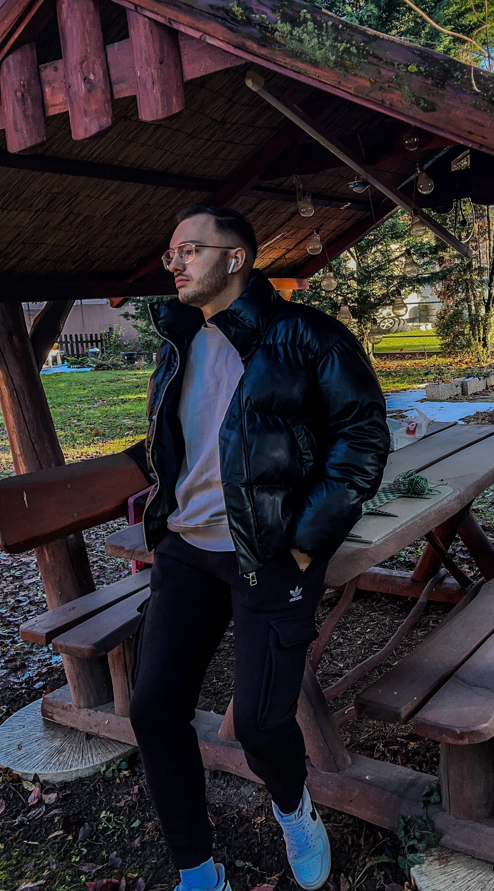

David Toth

About me
I am a Finance and Accounting student at Budapest Business University.
I have become so interested in software development that I am training myself
to pursue a career in the field, regardless of my studies in a different direction.
Education
- József Attila Primary School – Completed 8 years of primary education
- Budakalász High School – Obtained high school diploma
- Budapest Business University - Finance and Accounting (currently ongoing)
Experiences
Essentra Components
Office Assistant
- Invoice filing
- Mail handling
- Documentation
- Supporting accounting colleagues
DSV Solutions
Inbound Operator
- Welcoming arriving drivers.
- Preparing transportation and cargo-related paperwork.
Skills
- High motivation and interest towards software development
- I work well both independently and as part of a team.
- Fast learner
- User-level knowledge of Excel and Office.
Goals
- Completing the "The Complete Full-Stack Web Development Bootcamp" by Dr. Angela Yu
and achieveing the certification.
- Becoming a software developer.
- To further improve my skills including frontend and backend development